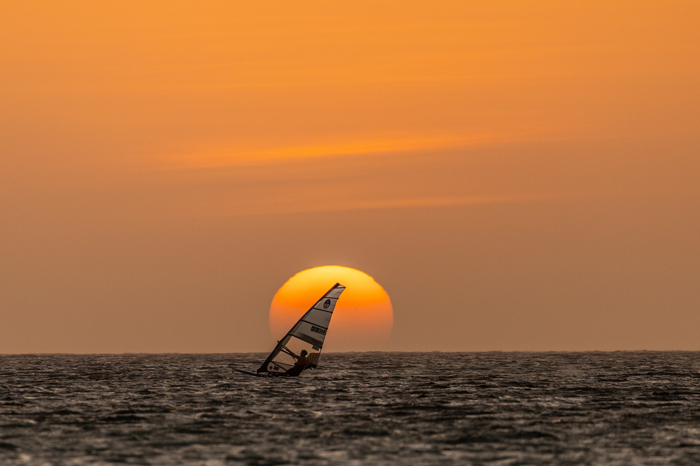
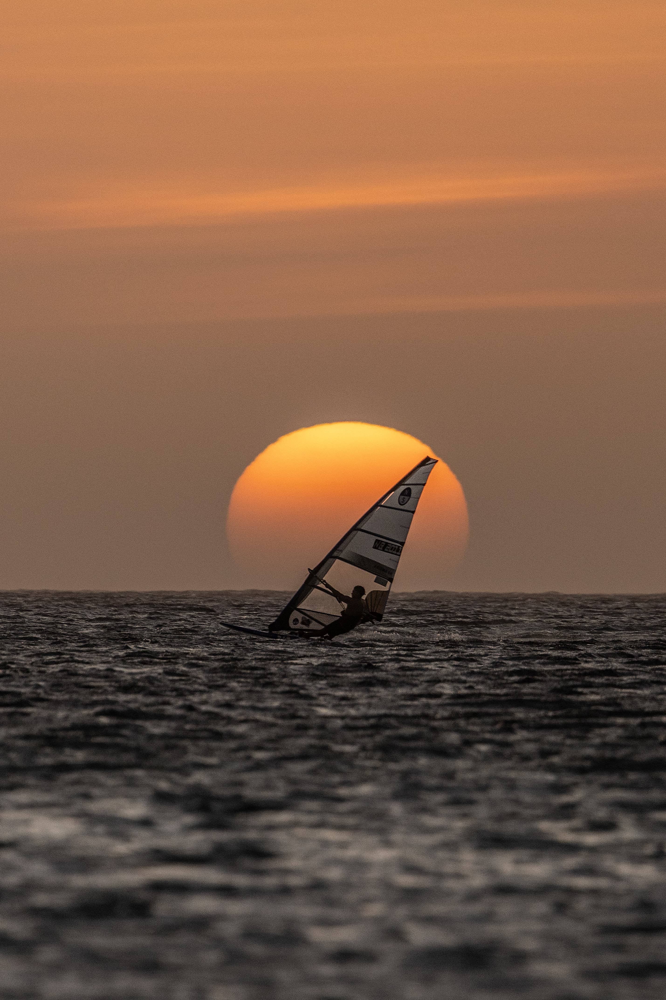
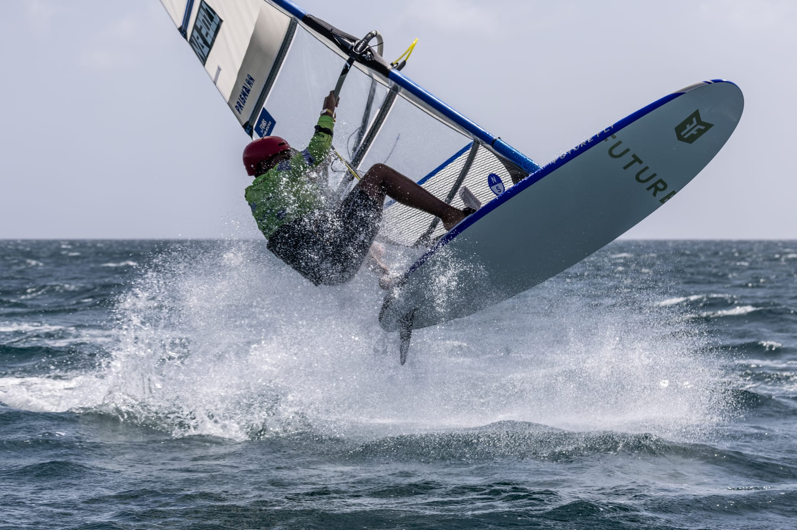

2× Youth World Champion · Bonaire
High-performance windsurfing. Global reach. Real impact.
Become a Partner →
Now racing U17 and winning there too. Every placing is sourced on the races page.

Put your brand on the gear that crosses the finish line. Sail, board and fin branding travels to every event on the calendar and lands in every race photo.
Race jerseys, training kit and podium wear. Your logo on the athlete, on the water and on the podium, in front of event media and international crowds.
Dedicated posts, reels and behind-the-scenes content from training in Bonaire and racing abroad. Built for your channels as much as his.
Performance, travel and progress. A look into the gear, the racing and life on tour. Tap any frame for the story behind it.